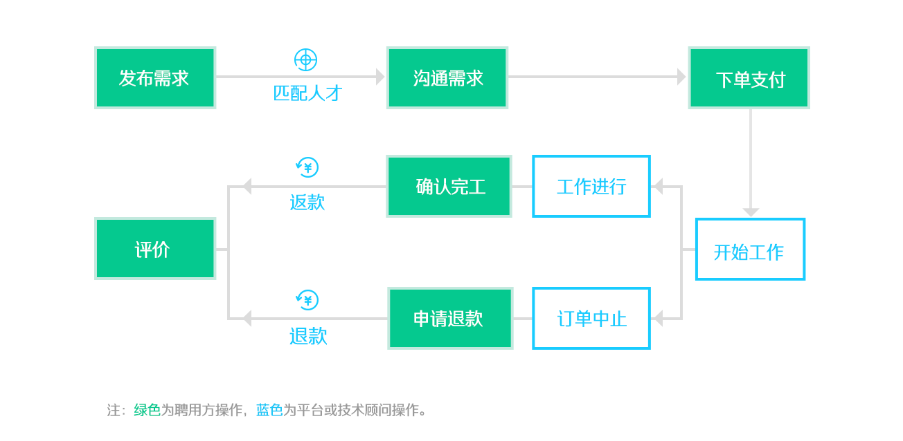

<div class="container with-box-shadow" ng-controller="ProcessCtrl" style="margin-top: 30px;margin-bottom: 30px">
  <div class="row" style="padding: 30px">
    <div class="empty-line"></div>

    <h1 class="text-center">常见问题</h1>

    <div class="empty-small-line"></div>

    <div class="col-md-8">
      <h2>一、面精介绍</h2>
      <div class="empty-small-line"></div>

      <strong>1. 联系我们</strong>

      <p>
        公司名称： 上海垚元信息科技有限公司
        <br>
        总部地点：上海市宝山区顾村大厦长兴花园6号楼6630
        <br>
        联系电话：8888888888
      </p>

      <strong>2. 开始使用面精网</strong>

      <p>
        聘用方：需要雇佣技术顾问的一方被称为聘用方。
        <br>
        人才方：在面精网接单的个人或者团队被称为人才方。
      </p>

      <p>
        交易过程如下：
        <br>
        1. 提出需求。聘用方可以在面精网“兼职需求”页面，点击“发布兼职需求”填写相关成功发布后，面精网服务人员将帮助对接合适人才。
        <br>

        2. 下单。聘用方在对接好的人才方个人信息页面点击“立即预约”，填写工作时长、工作日期、地点完成了下单。
        <br>

        3. 支付。聘用方可以使用支付宝/微信支付/银行转账三种方式对订单进行支付。
        <br>

        4. 沟通并工作。支付后会获取到人才方的联系方式，人才方根据需求开始工作。
        <br>

        5. 完工。人才方完成工作后，聘用方在订单点击“确认完工”后订单全部完成。
        <br>

        6. 评价。完工后聘用方可以对人才给予中肯的评价。
      </p>

      <div class="row">
        
      </div>
      <p class="text-center">
        聘用方雇佣人才流程图
      </p>

      <div class="row">
        
      </div>

      <p class="text-center">
        人才方接单流程图
      </p>

      <strong>3. 面精网平台在交易中是怎样收费的？</strong>

      <p>
        平台收取两种费用：
        <br>
        1. 服务费。平台收取完工订单金额5%的服务费。退款部分不收费。
        <br>
        2. 发票税点。聘用方如果需要发票，需要完工订单金额3%的金额抵扣增值税发票税点。不需要发票或者由人才方承担发票的情况不收取这项费用。
      </p>

      <strong>4.面精网如果保证双方的资金安全的？</strong>

      <p>
        平台作为担保方参与到交易的过程中。
        <br>
        ⁃ 支付担保。交易金额担保在面精网平台，待完工后由聘用方点击处理。
        <br>
        ⁃ 第三方纠纷解决。交易双方遇到纠纷可以面精网平台可根据合同介入解决纠纷。
        <br>
        ⁃ 人才质量担保。平台从注册、接单、评价三个方面严格把控人才的责任心和技能专业程度。保障人才方较高的质量。
      </p>

      <strong>5. 出现纠纷怎么办？</strong>

      <p>
        款项只有在双方协商后再进行返款处理，因为担保方的存在使得交易风险大大降低。
        <br>
        ⁃ 合同担保。面精网提供标准三方合同保障权责清晰。
        <br>
        ⁃ 平台介入。出现难以达成共识的纠纷时双方可以要求平台介入。根据双方提出的举证内容帮助解决纠纷。
      </p>

      <strong>6. 什么时间进行转账和退款？</strong>
      面精网平台使用支付宝和微信支付进行叫你，每周的周二、周五为打款日，对返款和退款进行人工审核后的处理。

      <h2>二、雇主/聘用方帮助</h2>
      <div class="empty-small-line"></div>

      <strong>1. 如何进入企业版？</strong>

      <p>
        点击头像右边的“进入企业版”即可。
      </p>

      <strong>2. 企业用户如何认证？</strong>

      <p>
        首先“进入企业版”，然后下拉个人头像进入“聘用方资料”页面，点击“申请认证”按钮，填写认证资料提交申请。
      </p>

      <strong>3. 每天限制预约多少个“技术顾问”？</strong>

      <p>
        对于没有认证通过的聘用方，预约并支付则不做限制，如果预约的订单没有支付，则每天限制预约2次。<br>
        对于认证通过的聘用方，预约并支付则不做限制，如果预约的订单没有支付，则每天限制预约4个“技术顾问“。
      </p>

      <strong>4. 技术顾问兼职如何保证进度？</strong>

      <p>
        技术人才在约定的时间，按需到您的办公地点，和您一起工作。保证良好沟通和团队效率。
      </p>
      <strong>5. 可以砍价吗？</strong>

      <p>
        不可以，工作时间和地点，兼职协议，薪酬计算和支付，都清晰明确。无需反复沟通。
      </p>
      <strong>6. 如何选择合适的工程师？</strong>

      <p>
        你可以看他的技术经验、项目经验与自己项目是否相符，然后再电话沟通下是否能够帮你搞定
      </p>
      <strong>7. 知识产权和商业机密如何保障？</strong>

      <p>
        创业公司可以和面精网签订技术服务合同，合同中会明确兼职劳动的知识产权归创业公司所有，且对创业公司的商业信息保密。同时我们可以提供技术服务商用发票。
      </p>

      <strong>8. 工程师希望线下交易怎么办？</strong>

      <p>
        请在面精平台支付，面精将提供支付中间担保、开发票、签订标准三方合同等服务，只有工程师按约完成工作，并经过您确认后，报酬才会支付给工程师。确认工程师完工之前，可随时申请退款，或支付工程师已工作的酬劳退回余款。面精不收取双方任何费用。如果线下直接支付，面精无法保障您的利益。
      </p>

      <strong>9. 如何开发票？</strong>
      <p>
        需要发票时，聘用方在“我的预约”中点击“需要发票”并填写发票信息即可。发票类型为“技术服务费”，税点为3%，聘用方只需要支付相应的税点金额发票即可按预留地址快递给聘用方。
      </p>

      <strong>10. 如何签合同？</strong>
      <p>
        下单时你可以联系平台运营人员获取（微信：shixianteam），合同我们会尽快发到您的邮箱。我们会通过电话邮件根据您的需要适当修订合同内容，确定无误后，我们会打印两份盖章快递给您，您和工程师各自签字后各自保留一份即可。
      </p>

      <strong>11. 不满意可以退款吗？</strong>
      <p>
        不满意可以随时终止合作，双方协商全额退款，或只支付工程师已工作的酬劳退回余额。
      </p>

      <strong>12. 为什么强制评价？</strong>
      <p>
        聘用方对技术顾问的工作表现、工作态度、专业技能等方面给出客观评价，以便给其他创业者真实可靠的参考，并带动大家提供真实客观评价，这将有助于平台的良性发展写。
      </p>

      <strong>13. 申请退款什么时候收到返款？</strong>
      <p>
        申请退款需要通过技术顾问这边确认，确认后的首个周二或周五我们将发给您<br>
        如果工程师一直没有来确认怎么办？我们会打电话给双方核实情况，情况属实，即把钱返给您。
      </p>

      <strong>14. 知识产权和商业机密如何保障？</strong>

      <p>
        创业公司可以和面精网签订技术服务合同，合同中会明确兼职劳动的知识产权归创业公司所有，且对创业公司的商业信息保密。同时我们可以提供技术服务商用发票。
      </p>

      <strong>15. 服务收费么？</strong>

      <p>
        创业公司仅需向工程师以日薪方式支付技术服务费。面精网不向创业者及工程师两方收取任何费用。
      </p>

      <strong>16. 预约谈需求，如果没有谈成合作，工程师还收费吗？</strong>

      <p>
        如果是预约咨询，需要支付给工程师收费。<br>
        如果是聊需求但双方没有达成合作，可以双方协商，雇主可以申请全额退款，或支付工程师已工作的酬劳退回余款
      </p>

      <h2>三、技术顾问帮助</h2>
      <div class="empty-small-line"></div>

      <strong>1. 如何申请成为技术顾问？</strong>

      <p>
        登录shixian.com后，点击”申请成为技术顾问“按钮，填写基本资料，提交审核，审核通过与否我们都会短信通知您。<br>
        （审核需要1-3个工作日。真实姓名预约后可见，电话支付后可见，邮箱、支付宝账号仅用于平台联系及打款，不会对外展示）</p>

      <strong>2. 如何计算报酬？</strong>

      <p>按照日薪计算，由技术顾问自己设置日薪。建议薪酬等于或高于当前工资水平。</p>

      <p>如现在公司的税前月薪是22K，日薪可定为1K或更多。</p>

      <strong>3. 什么时间兼职？</strong>

      <p>工作日下班后19：00-23：00，周六周日的9：00-18：00以及19：00-23：00。</p>

      <p>如有特殊情况，可以和聘用方商议。</p>

      <strong>4. 怎样计算工作时间？</strong>

      <p>工作8小时计为一天。</p>


      <p>9：00-18：00，工作时长8个小时（中午休息一个小时），计为1天；</p>

      <p>工作日下班后的19：00-23：00，工作时长4个小时，计为0.5天。</p>

      <p>这些业余时间单月共计可达25天，可获得比全职月薪更高的报酬。</p>

      <strong>5. 去创业公司时间赶得上么？</strong>
      <p>
        我们会根据地理位置推荐，去离你较近的创业公司兼职。
      </p>

      <strong>6. 可以拒绝预约吗？</strong>
      <p>
        可以的，因为每个人的时间和精力有限，可以根据自己精力选择是否接受预约
      </p>

      <strong>7. 时间地点如何选择？</strong>
      <p>
        可以双方协商，比如在聘用方办公场地或是距离工程师较近的咖啡馆
      </p>

      <strong>8. 上门兼职需要自己带电脑吗？</strong>

      <p>
        默认是需要的，需要您和聘用方协商
      </p>

      <strong>9. 需要长时间为一家创业公司兼职么？</strong>

      <p>
        不需要。创业公司可聘用你的最长时间由你来设置，比如你可以设置为10天，这时创业公司单次最多只能聘用你10天。
      </p>

      <p>
        系统设置的最长工作时间为30天。
      </p>

      <strong>10. 收款有保障吗</strong>

      <p>
        创业公司在预约你的时候需要先行支付。面精网为支付做中间担保。
      </p>

      <strong>11. 什么时候能收到兼职的薪资？</strong>

      <p>
        我们是在每周周二和周五结算”确认完工"的订单，并给技术顾问返款。<br>
        所以在雇主“确认完工”的第一个周二或周五即可收到返款。如果雇主没有及时”确认完工“，你可以“申请完工”，等待雇主确认，如果雇主没有及时确认，那么订单会在5天后自动”确认完工“。
      </p>

      <strong>12. 需要为创业公司提供发票、合同么？</strong>

      <p>
        发票和合同都由面精网提供。我们不会向工程师收取任何费用。你只需要在面精网注册成为“技术顾问”，等待创业者主动预约你，其他的琐事都由面精网来搞定。<br>
        我们会把盖好戳的合同邮寄给雇主，你只要和雇主签字后各自保留一份就好。
      </p>

      <strong>13. 比较忙时不想接受预约？</strong>

      <p>
        可以在“设置“里更改你的预约状态，设置成暂停预约即可<br>
        等到不忙的时候，在更改成接受预约
      </p>
      <strong>14. 必须上门兼职吗</strong>
      <p>
        坐班时间可以和雇主协商
      </p>

      <strong>15. 技术顾问能修改自己的资料信息吗？</strong>
      <p>
        可以的，你可以在设置里修改您的信息
      </p>

      <strong>16. 不想让未审核通过的创业公司看到自己的资料？</strong>
      <p>
        可以在设置里，勾选”只有已认证的聘用方，才可以查看我的个人信息“
      </p>

      <strong>17. 如何提高自己的接单率？</strong>
      <p>
        为了提高您的接单率，您可以丰富您的技术顾问资料，展示您的作品，让充分聘用方充分了解你的工作实力，以便更快达成交易。<br>
        或者适当调低您的价格，获得好评后再调高价格。
      </p>
    </div>

    <div class="clearfix"></div>
    <div class="empty-line"></div>
    <div class="empty-small-line"></div>
  </div>
</div>